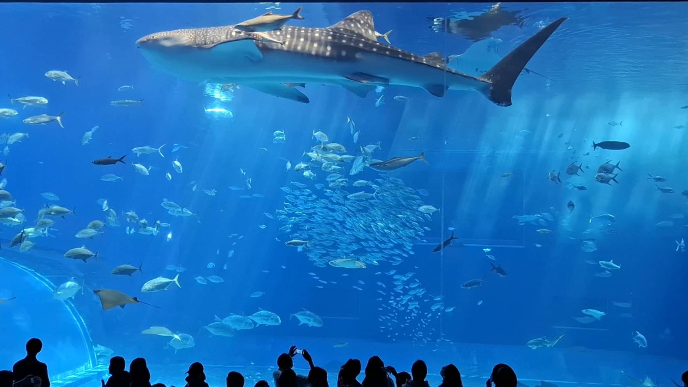
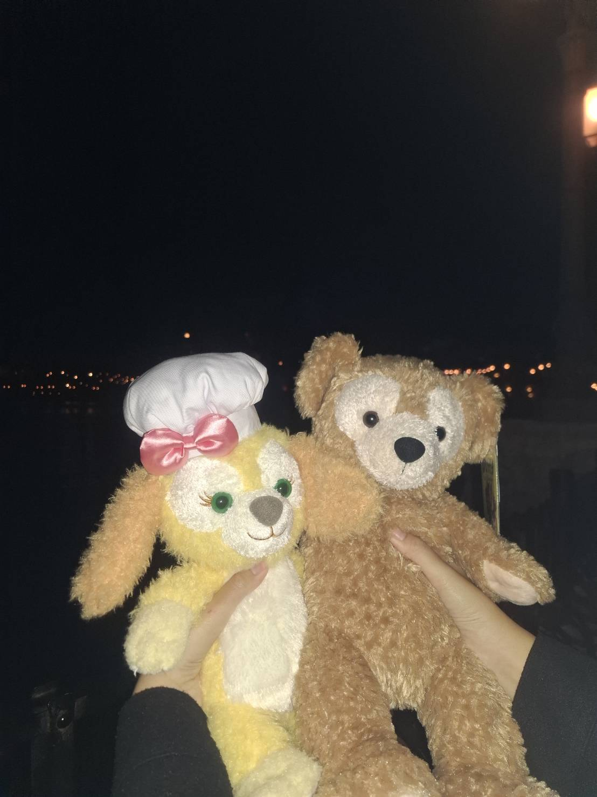
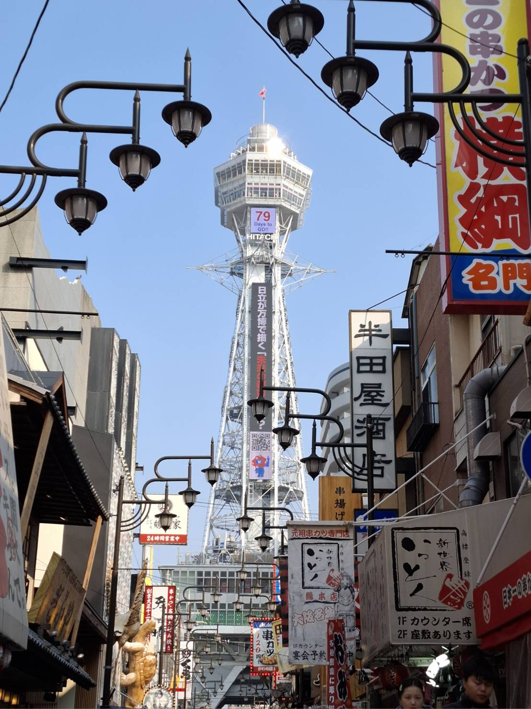

旅人簡介
旅行對我來說，是一場抽離日常的日常。不論是穿梭在京都的古樸巷弄，還是沉浸在東京的繁華霓虹，每一個落腳點都寫成了專屬的故事。
在這裡，我記錄了古蹟的沉靜、海風的溫柔，以及那些在深夜溫暖胃袋的拉麵美食。歡迎來到我的視角，一起開箱這幾座城市的獨特風景。
推薦觀看：高科大精彩校慶影片
收集漫步日本街頭的微光碎片，記錄那些溫暖人心的日常與風景。
旅行對我來說，是一場抽離日常的日常。不論是穿梭在京都的古樸巷弄，還是沉浸在東京的繁華霓虹，每一個落腳點都寫成了專屬的故事。
在這裡，我記錄了古蹟的沉靜、海風的溫柔，以及那些在深夜溫暖胃袋的拉麵美食。歡迎來到我的視角，一起開箱這幾座城市的獨特風景。
那些令我流連忘返的日本角落

Okinawa開著車馳騁在古宇利大橋上，兩側是無限延伸的Tiffany藍海面。鹹鹹的海風拍在臉上，那是屬於夏天的自由味道。

Tokyo站在六本木展望台上，看著東京鐵塔在夜色中亮起溫暖的橘光。這座城市的繁華與孤獨，在這一刻都融化在夜景裡。

Osaka熱情滿分的大阪！在道頓堀大口吃著現做的章魚燒與大阪燒，看著著名的固力果跑跑人霓虹燈，感受到最純粹的城市活力。